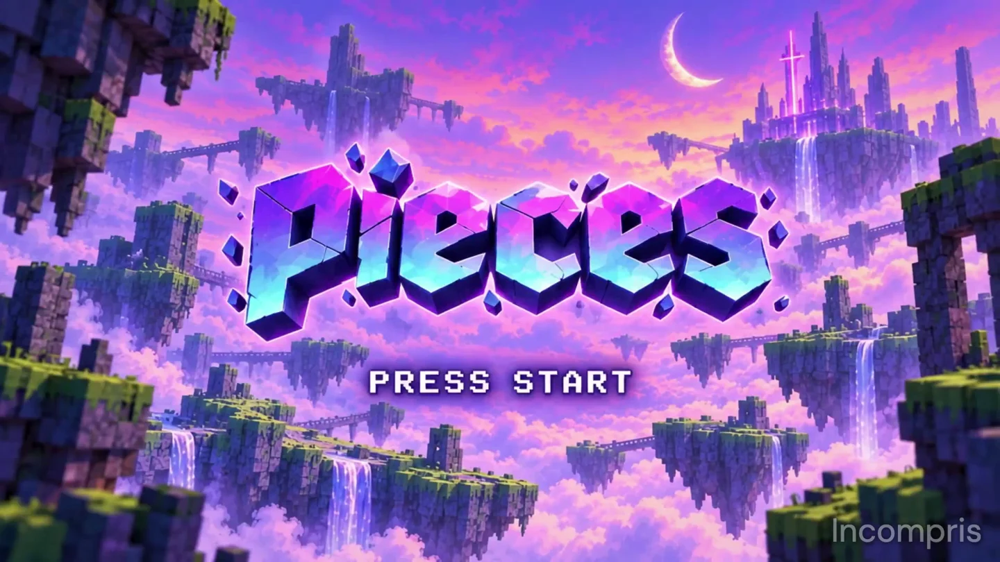
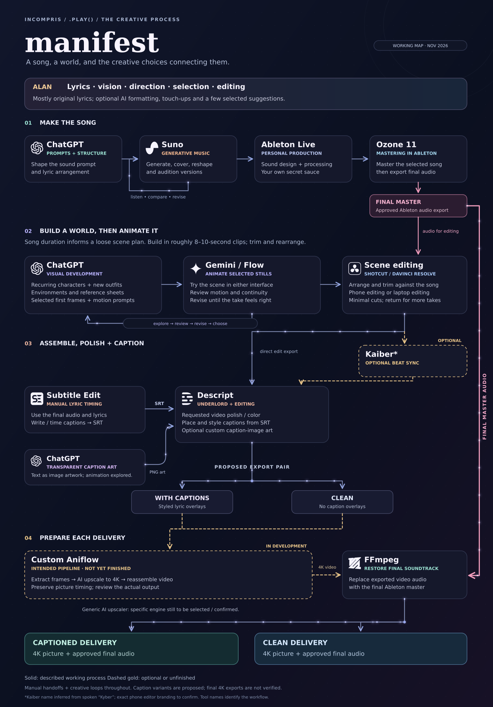

A FILM & SONG BY ALAN SZMYT / .PLAY()
pieces.
Floating ruins. Glowing crystals.
Press start.

{{screenControl}}Original music and film by Alan Szmyt / .play()
{{watchLink}}01 / THE IDEA
A world built
from pieces.
pieces is an original song and film set among floating ruins, waterfalls, and crystalline objects. The masked akashic moves through this game-inspired world under a violet sky.
The opening screen invites you to press start. The film carries that visual language into its faceted character design and lyric art.
02 / THE PROCESS
From title screen to film.
Character, world, and motion.
Cut to the song.
-
01
Creative direction
Press start
A game-inspired title screen introduces the song and its world.
-
02
Character design
Give akashic a look
A faceted silhouette, a glowing mask, and a violet-and-cyan wardrobe carry through the film.
-
03
World design
Build the sky ruins
Floating stone paths, waterfalls, and crystals give akashic a world to explore.
-
04
Music
Set the pulse
The original song sets the rhythm for the movement and the cut.
-
05
Editing and lyrics
Bring the words into frame
Styled lyric art brings the words into the same visual world as the title and crystals.
03 / STUDIO WORKFLOW
How the pieces connect.
Sound, imagery, and delivery.
A song, character references, and lyric artwork meet in the edit. The manifest workflow below shows how those kinds of inputs can travel from idea to delivery.
- Sound
The song gives the moving image its pacing.
- World
The akashic character sheet and the sky ruins establish a consistent look across scenes.
- Delivery
The video assembles the song, scenes, and styled lyric captions.
Explore the manifest workflow Music · imagery · motion · delivery


04 / CREATIVE TOOLS
I make with these tools.
I want to help build them.
I’m drawn to software that helps people take a creative impulse and turn it into something they can share. I experience that process as a creator, and I approach the tools behind it as a software engineer.